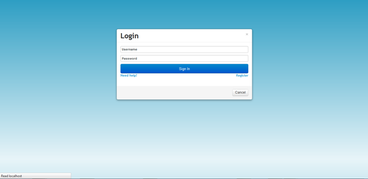

Normally, a shortcut to the application is created on the desktop of the computer. To log in, follow the following steps;

The application has different access levels and depending on the level you are, you will have access to the different features of the application.
Created with the Personal Edition of HelpNDoc: Write eBooks for the Kindle